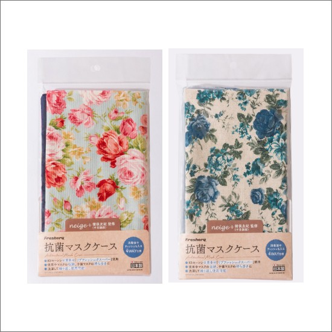
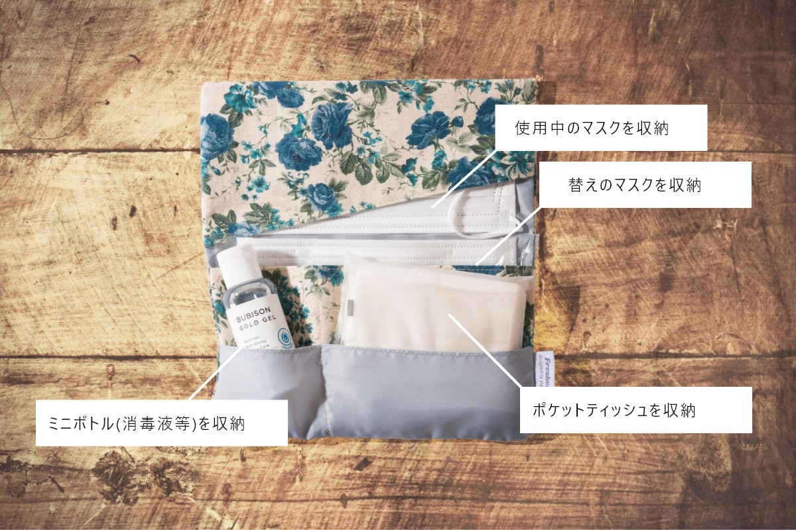

■「抗菌マスクケース」の4つのコンセプト
快適雑貨ブランド『フレシェリーR』から、ハンドメイド作家neige＋R（ネージュ）として活躍する猪俣友紀氏の監修による「4way抗菌マスクケース」
食事の際に外したマスクの一時保管はもちろん、替えのマスクや消毒液ミニボトル、ポケットティッシュ等カバンに入れて持ち運ぶのに便利なサイズに仕上がっています。
外側のデザイン生地選考、マスクケースのレシピ考案と細部に至るまで作家の配慮が行き届いています。内生地には昨今の情勢を鑑みて当社の抗菌防臭テキスタイル「リブフレッシュRPスーパー」を使用した商品になっています。
「neige＋R」は猪俣友紀の登録商標です。
 Contact
Contact